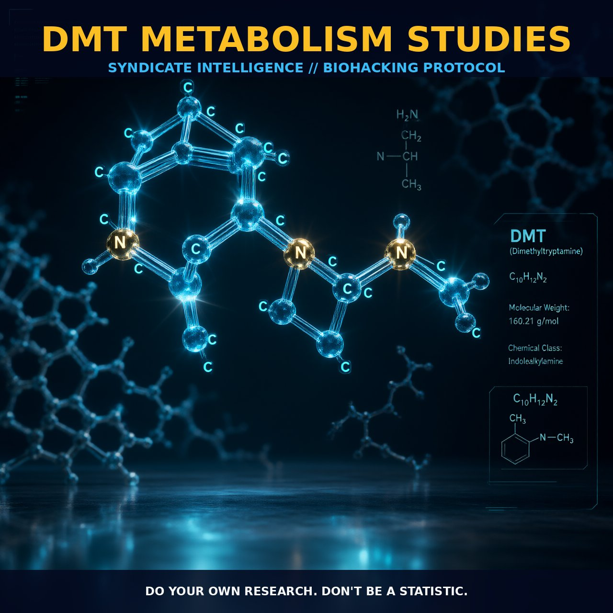

Mechanisms and Tactics of DMT Metabolism

1. The Mechanism
The metabolism of N,N-Dimethyltryptamine (DMT) is a complex biochemical pathway, primarily driven by monoamine oxidase A (MAO-A). DMT, an endogenous hallucinogen, is rapidly metabolized and converted into indoleacetic acid (IAA), a common precursor metabolite, and DMT-N-oxide, the second-most abundant metabolite. This rapid metabolism is a key factor in the short-lived effects observed after DMT administration.
DMT is also converted to two tetrahydro-beta-carbolines (THBCs): 2-methyl-THBC and THBC. These metabolites play a crucial role in the clearance and breakdown of DMT within the body.
The biosynthesis of DMT involves the dimethylation of tryptamine (TA) by the enzyme indolethylamine N-methyltransferase (INMT). Tryptamine itself is derived from tryptophan through the action of aromatic amino acid decarboxylase (AADC). The process of methylation requires S-adenosyl-methionine (SAM) as the methyl donor, which facilitates the formation of N-methyltryptamine (NMT) and then DMT.
The pathways for DMT biosynthesis and metabolism are well-characterized, with DMT being a key component in various neurochemical pathways.
2. Biological Leverage
Understanding the biological leverage of DMT metabolism provides valuable insights into its role as a neurotransmitter and its potential impact on brain function. The rapid metabolism of DMT by MAO-A enzymes means that only a small fraction of the administered DMT reaches the brain, where it exerts its effects. This rapid clearance and metabolism imply that the levels of DMT in the brain are transient and fluctuate rapidly, contributing to the short duration of its psychoactive effects.
The localization of AADC and INMT enzymes is critical for DMT biosynthesis, particularly in discrete brain areas. The co-localization of these enzymes in specific brain regions suggests that DMT can be synthesized and released in a controlled manner, potentially influencing local neural circuits. This localized synthesis and metabolism of DMT could provide a mechanism for fine-tuning its effects in different brain areas, contributing to its role as a neuromodulator.
The rapid metabolism of DMT to IAA and DMT-N-oxide suggests that these metabolites are involved in the regulation of DMT levels. IAA, in particular, is a significant metabolite that plays a role in the clearance of DMT. The presence of THBCs as metabolites indicates that DMT is actively transported and stored in synaptic vesicles, allowing for controlled release and regulation of its effects. This storage mechanism provides a reservoir of DMT ready for release, facilitating its role as a neurotransmitter and neuromodulator.
3. Tactical Implementation
When considering the practical implementation of DMT, the rapid metabolism and clearance of the compound must be taken into account. For intravenous or intramuscular administration, DMT reaches peak concentration in the blood within 10–15 minutes and is below detectable levels within one hour. This rapid onset and short duration of effects make DMT a potent but transient neuromodulator. For inhalation, the onset of effects is even quicker, typically occurring within seconds to minutes.
Dosage ranges for DMT administration vary widely, with typical doses for psychoactive effects ranging from 20 to 60 mg for inhalation and 25 to 75 mg for intravenous administration. The dose-response curve for DMT is steep, with a narrow window between psychoactive effects and side effects. The short half-life of DMT necessitates careful timing and stacking to optimize its effects.
Combining DMT with a low dose of a MAOI can enhance its bioavailability and prolong its duration of action. Stacking DMT with compounds that modulate cAMP signaling can enhance its effects. For instance, DMT can increase intracellular cAMP levels, which in turn can influence neurotransmitter release and neuronal activity. Combining DMT with compounds like forskolin or caffeine, which enhance cAMP production, can potentially potentiate its neuromodulatory effects.
Careful consideration of timing and dosage is crucial to maximize the impact of DMT while minimizing potential side effects.
Prostar Life Hack
Stack DMT with a low dose of MAOI to enhance bioavailability and prolong its duration of action. Consider combining DMT with forskolin or caffeine to potentiate its neuromodulatory effects.
[ AUTHOR: LEAD TECHNICAL RESEARCHER ]